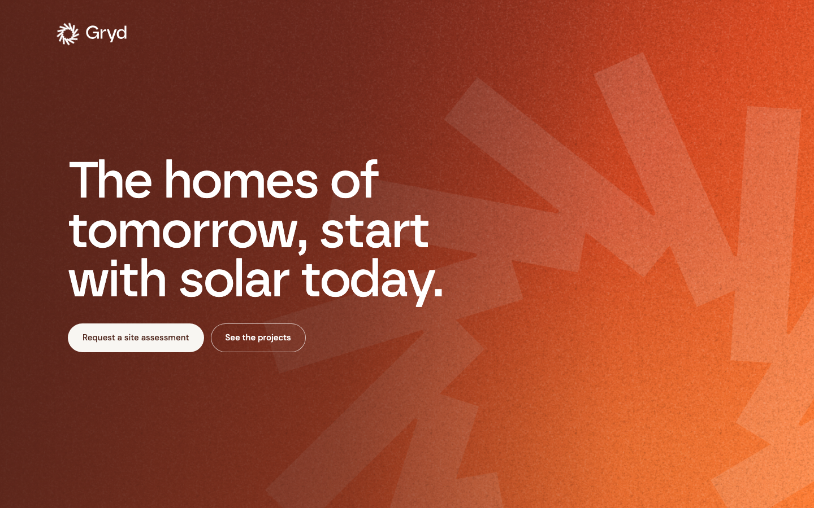
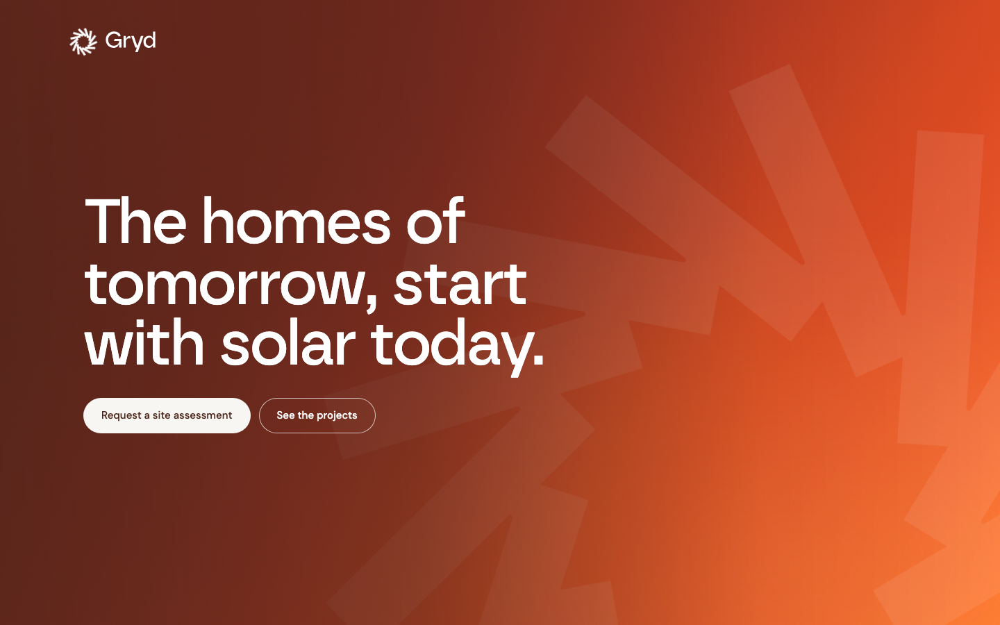
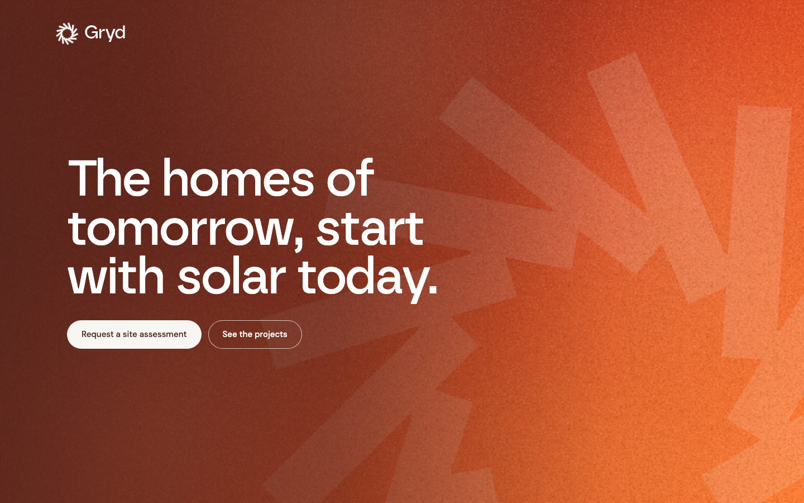
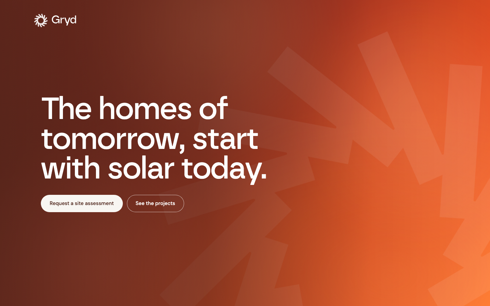
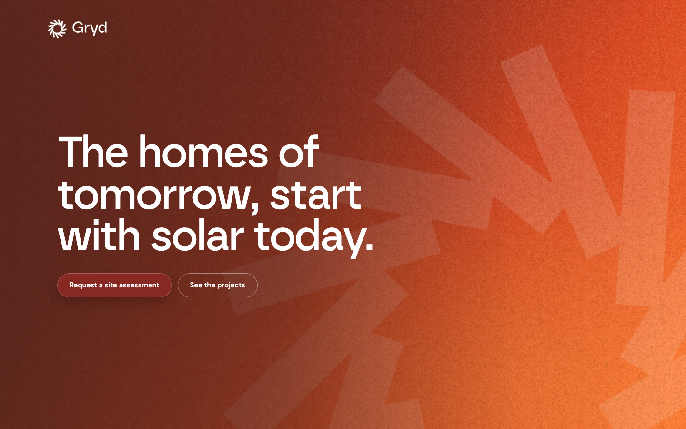
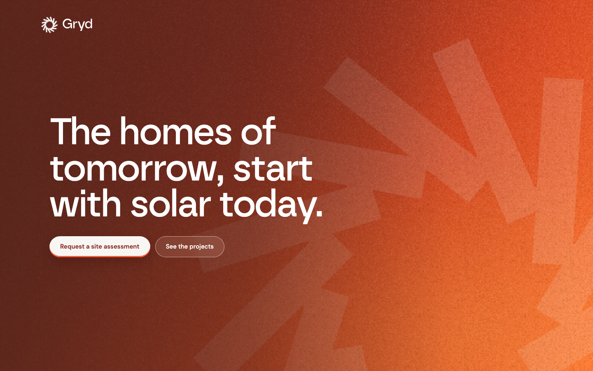
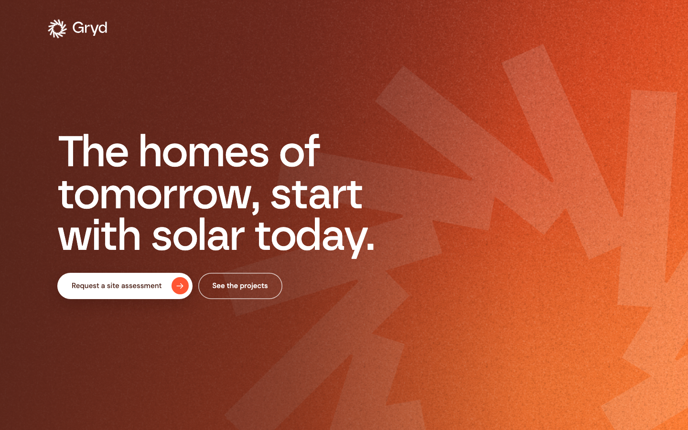
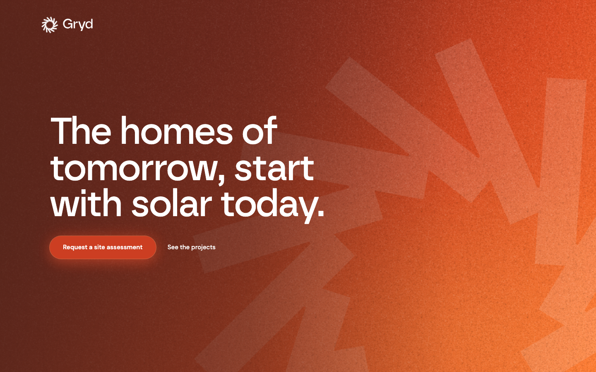

One composition, one decision changed per page. Back to all options
The picks, on one page.
The field itself. Same buttons on every one.

11Base. Ember wash, giant off canvas emblem, grain and heat swell.
11aSmooth. Dithered ramp and a barely there grain, the tooth gone.
11jMesh motion. The ember mesh from 3d rising through the wash on a sixteen second convection.
11kSmooth mesh. 11a's dithered ramp and fine grain with 11j's mesh rising through it.The two calls to action, one treatment per page, on the base field.

11cWeight. Solid ember primary with a flare glow, quiet ghost.
11dGlass. Cream primary with an ember label, blurred outline secondary.
11fSite native. White pill with a round flare arrow chip, outlined secondary.
11gFlare fill. Solid flare primary with a warm glow, underlined text secondary.